Este manual descreve a release candidata do Projeto Integrador Transdisciplinar em Engenharia de
Software II. Esta edição apresenta a candidata publicada a351c5a, preparada em 13/10/2026. As capturas reais estão no plano e registro, com fonte, legenda e hash. Todos os dados apresentados são fictícios. A versão definitiva continua dependente das cinco avaliações humanas.
Use o manual HTML imprimível, o PDF e o roteiro do vídeo. Os PDFs e imagens não contêm credenciais.
Cada conta possui um perfil: administrador, instrutor ou participante. Menus e registros são filtrados no servidor conforme o perfil e, no caso de instrutores, conforme o vínculo com a turma.
A tela Esqueci minha senha inicia a recuperação. Este ambiente acadêmico usa backend de console; não entrega mensagens em caixas de e-mail. Para as avaliações, receba a credencial privadamente do responsável. Não exponha logs com links/tokens em gravações ou capturas.
No cabeçalho, abra Meu perfil, confira o nome completo e o e-mail e selecione Salvar perfil. Use o novo e-mail no próximo acesso e na recuperação de senha. O e-mail deve ser válido e não estar em uso; o nome é obrigatório. O perfil de acesso é apenas informativo nessa tela. Dados acadêmicos e certificados já emitidos mantêm seus registros.
Situações de oficinas, turmas e encontros são apenas consultadas no admin. Siga o link apresentado no registro para publicar, abrir inscrições, iniciar, cancelar ou processar a conclusão na aplicação. Inscrições, projetos, avaliações e certificados são consultados no admin; suas alterações usam os fluxos acadêmicos deste manual. Um encontro da mesma turma não pode repetir o início de outro; o formulário informa a duplicidade sem gravar.
Contas com histórico não são excluídas pela interface. O último administrador ativo não pode perder ativação, papel administrativo ou acesso administrativo.
Para participantes menores, cadastre um responsável ativo e use Vincular na página do participante. A elegibilidade da inscrição considera idade e vínculo com responsável.
Somente inscrições confirmadas ocupam capacidade. O sistema bloqueia duplicidade e protege a última vaga contra confirmações simultâneas.
Na página da turma, abra o acompanhamento para conferir encontros, frequência, projetos, avaliações e situação. A conclusão só pode ser processada quando os registros obrigatórios estiverem prontos. A aprovação exige simultaneamente:
Uma emissão repetida retorna o mesmo registro. A revogação não apaga o histórico e impede novo download enquanto o certificado estiver inativo.
Os CSVs administrativos usam UTF-8 e ;, abrem no Excel em português e não incluem CPF,
telefone ou e-mail.
Abra Minhas turmas. Somente turmas com vínculo ativo são exibidas. Se uma turma esperada não aparecer, solicite ao administrador que confira o vínculo.
Uma nova submissão corrige os mesmos registros, sem duplicá-los, e atualiza autoria e horário. Encontros futuros ou cancelados não aceitam chamada.
O instrutor não conclui turma, emite/revoga certificados nem acessa turmas sem vínculo.
O Painel mostra apenas as turmas vinculadas. Exportações CSV consolidadas permanecem restritas ao administrador.
Com vaga, a solicitação fica pendente de análise administrativa. Em turma lotada com fila ativa, ela entra em espera. Não é possível solicitar duas inscrições para a mesma turma.
Abra Minha jornada para ver encontros realizados, presenças, percentual, projeto, avaliação publicada e certificado. Falta justificada continua não sendo presença no cálculo acadêmico.
Em uma turma em andamento com inscrição confirmada:
O resultado aparece somente depois de publicado. Quando aprovado e com certificado emitido, abra Meus certificados, consulte o documento e selecione Baixar PDF.
| Situação | Ação recomendada |
|---|---|
| Credenciais recusadas | conferir e-mail, senha e se a conta está ativa |
| Acesso negado | confirmar perfil e vínculo com a turma |
| Turma não aparece | conferir situação, datas e vínculo |
| Inscrição bloqueada | verificar idade, responsável, prazo e duplicidade |
| Chamada indisponível | confirmar se o encontro ocorreu e não foi cancelado |
| Conclusão bloqueada | completar encontros, projetos e avaliações pendentes |
| Certificado indisponível | confirmar aprovação, emissão e ausência de revogação |
| CSV com colunas incorretas | importar usando UTF-8 e separador ; |
Se houver erro inesperado, registre perfil, caminho, horário, resultado obtido e esperado. Não inclua senha, cookie ou dados pessoais na evidência.
O PDF final do manual deve registrar domínio, tag/SHA, data de captura e autor. Esses campos serão
preenchidos depois das cinco avaliações, quando a versão definitiva for promovida para main.
Referência: 13/10/2026. Os registros originais são reutilizados por ID. PY-2026-01 está concluída (Ana aprovada, Bruno não concluinte por 50% de frequência; certificado ativo de Ana, 8h). WEB-2026-01 está em andamento (Carla 100%, Diego 50% em dois encontros; projeto entregue e rascunho; nota de Carla não publicada). ROB-2026-01 tem 2 vagas preenchidas e uma pessoa em espera; PY-2026-02 permanece planejada.
As sete turmas A01–A05 são espaços de avaliação separados; não usar esses acessos para captura. A conta operacional foi preservada integralmente e não é usada neste manual.
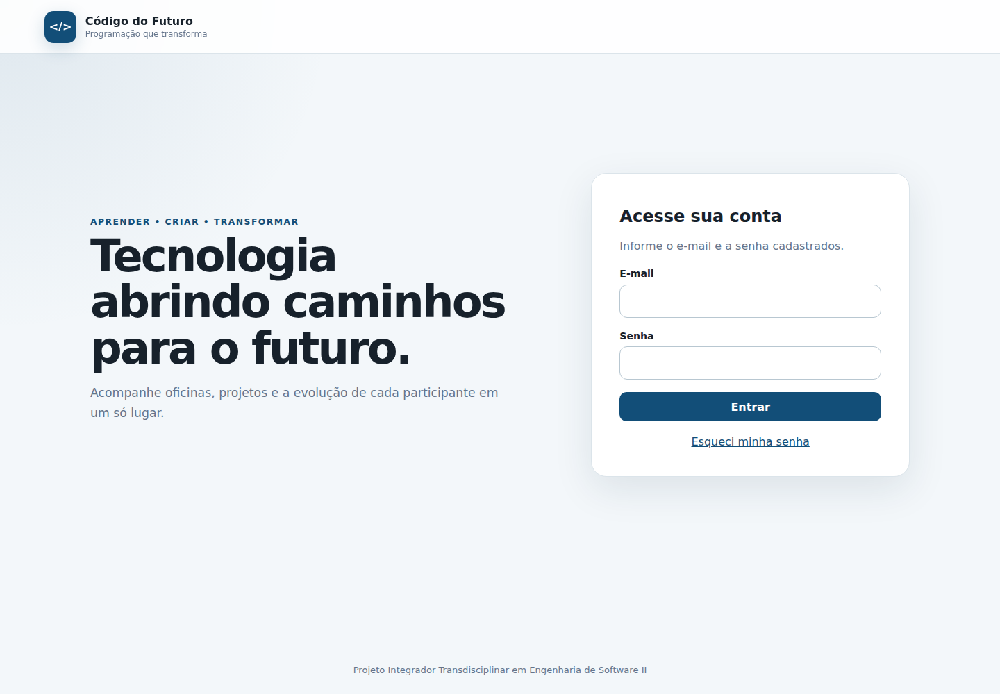
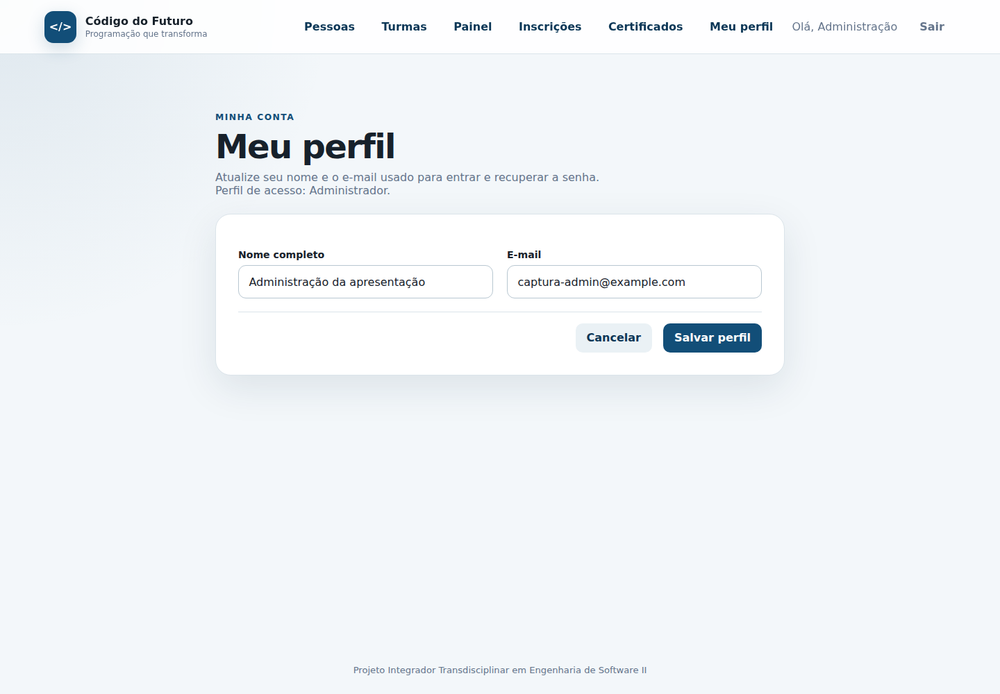
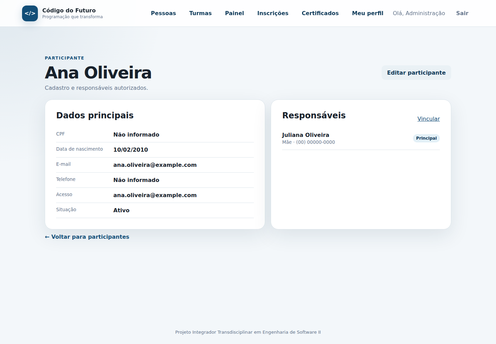
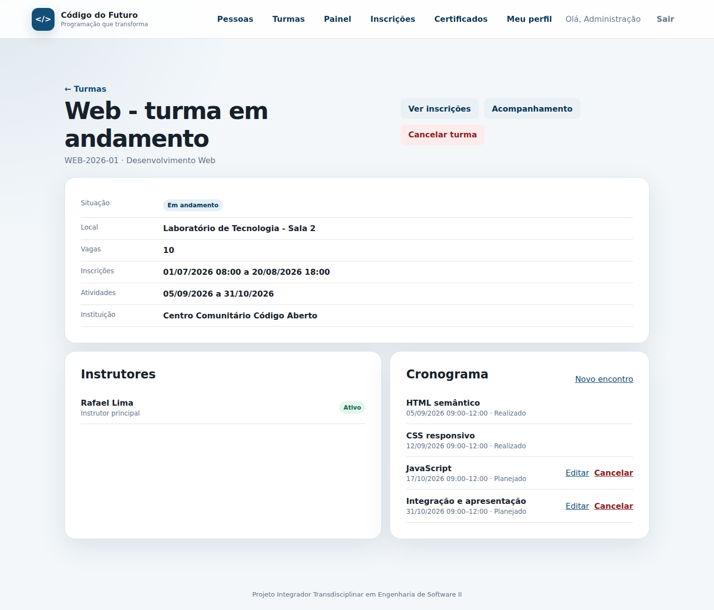
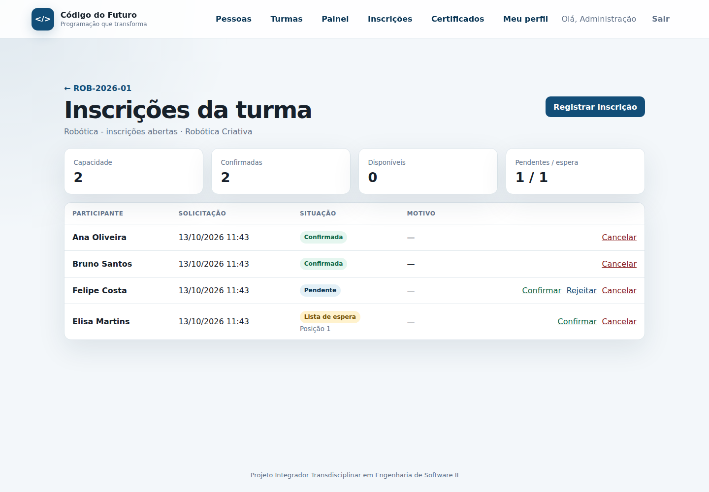
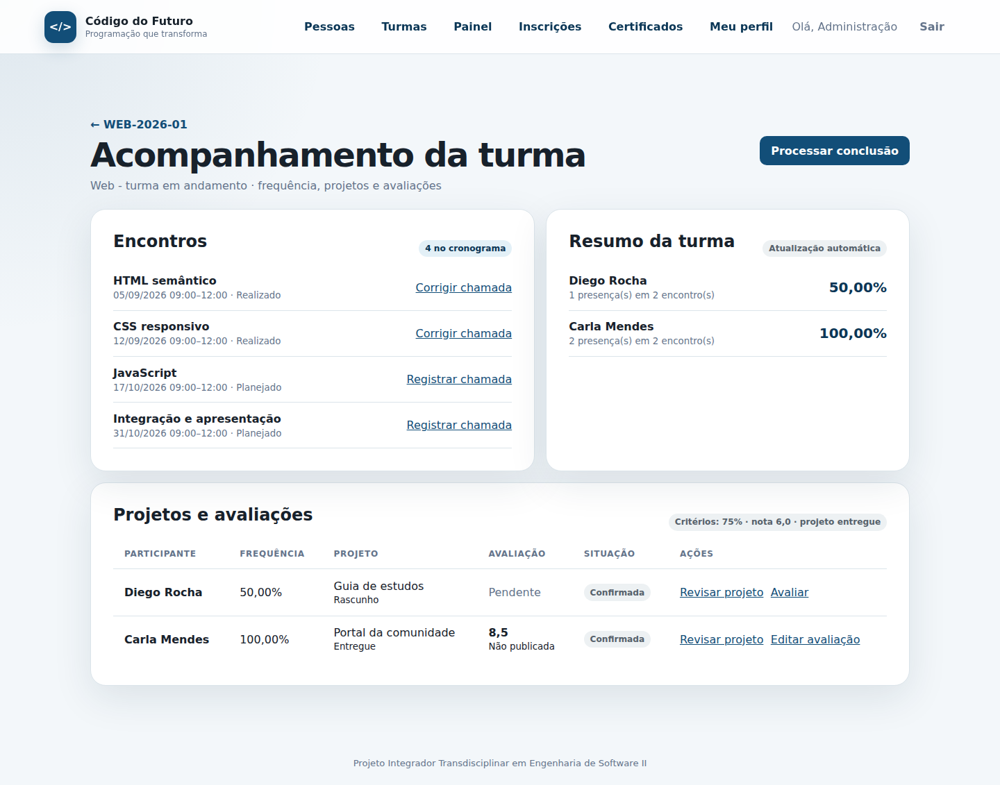
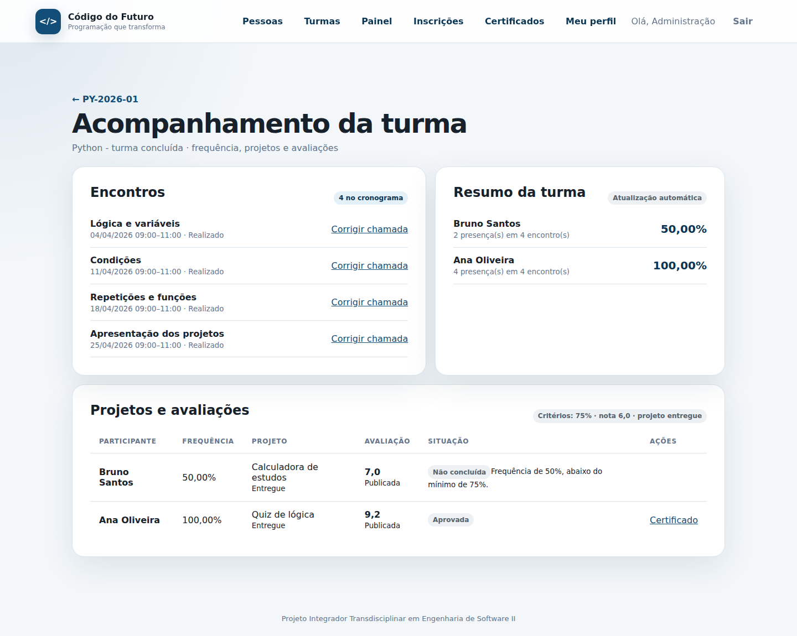
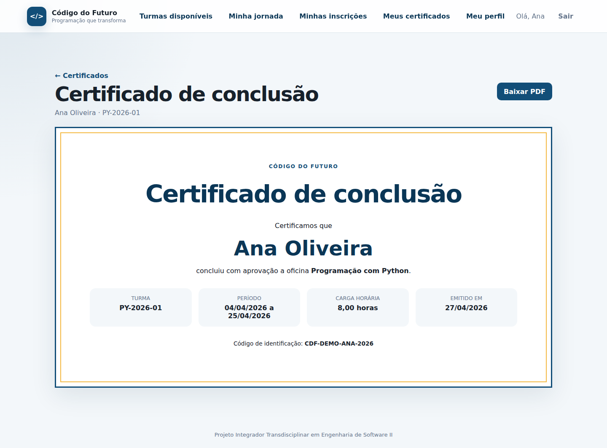
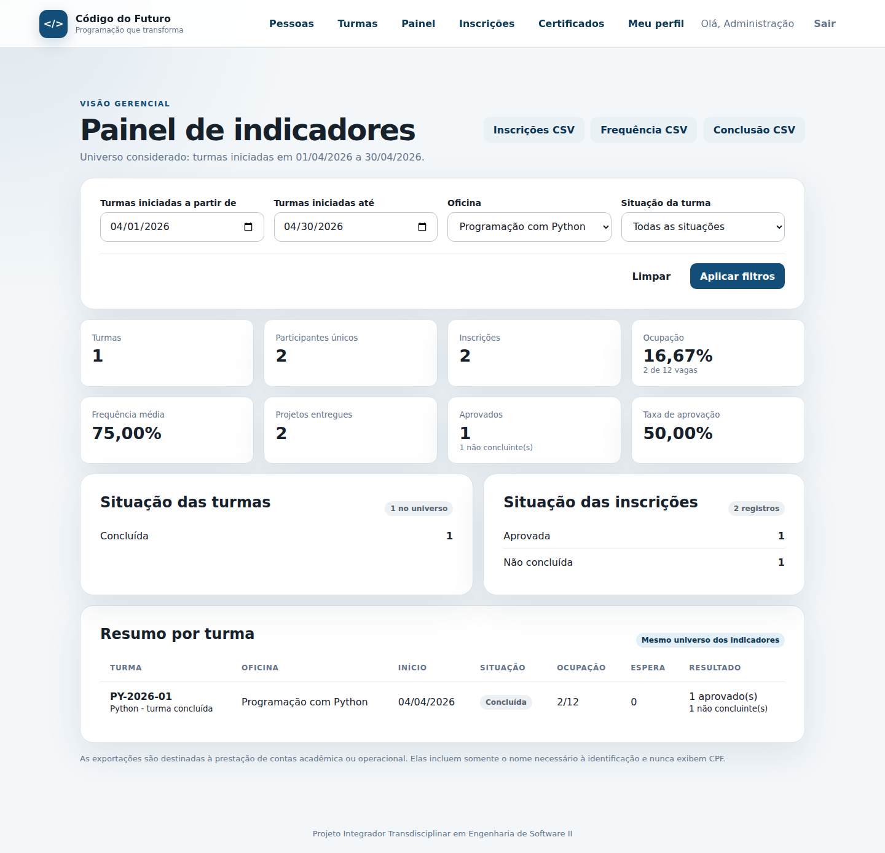
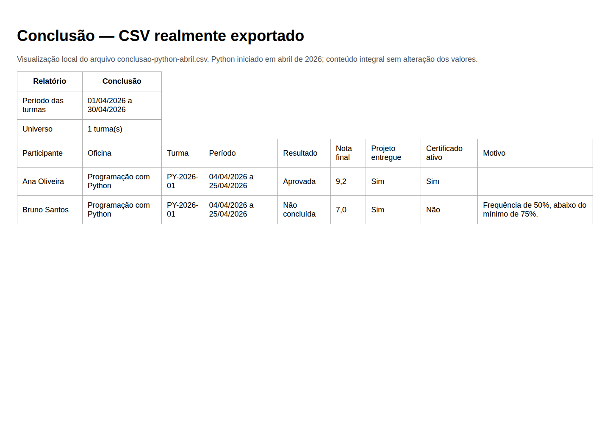
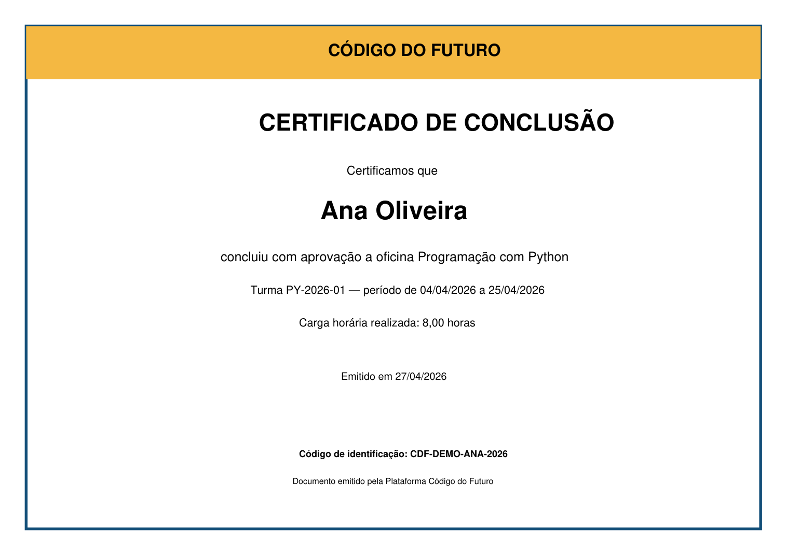
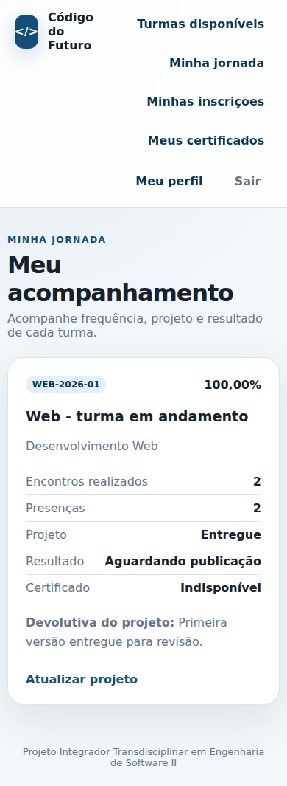